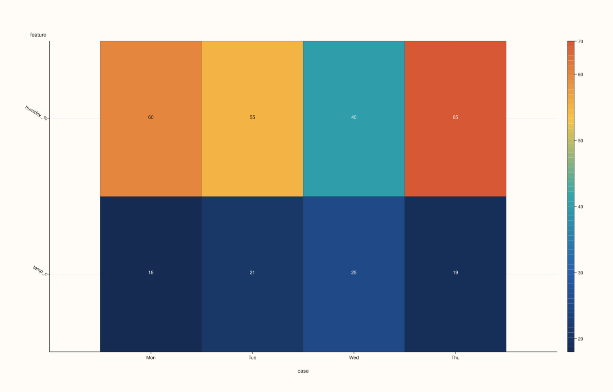
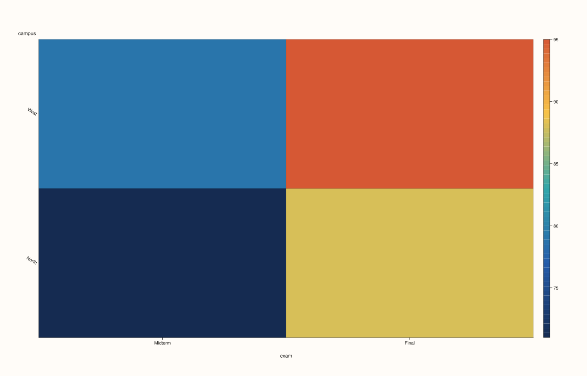
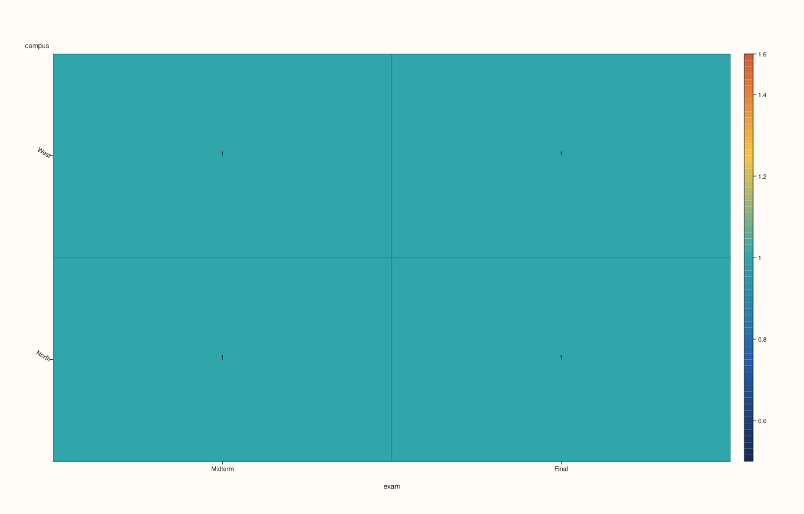

DataFramePlotAccessor::heatmap¶
Back to DataFramePlotAccessor API Reference
Signatures¶
DataFramePlotAccessor::heatmap(pluss::msharp::RangeView::Of<std::string_view> features) const -> pluss::pl::Studio
DataFramePlotAccessor::heatmap(pluss::msharp::RangeView::Of<std::string_view> features,
const HeatmapPlotOptions& options) const -> pluss::pl::Studio
DataFramePlotAccessor::heatmap(std::string_view case_feature,
std::string_view feature_feature,
std::string_view value_feature,
DataFrame::GroupOp op = DataFrame::GroupOp::Mean) const -> pluss::pl::Studio
DataFramePlotAccessor::heatmap(std::string_view case_feature,
std::string_view feature_feature,
std::string_view value_feature,
DataFrame::GroupOp op,
const HeatmapPlotOptions& options) const -> pluss::pl::Studio
What It Does¶
Two genuinely different modes, chosen by which overload is called:
Direct (wide) mode —
heatmap(features[, options]): each requested numeric feature becomes one row of the heatmap matrix; the frame’s own row labels become the columns. This renders the raw values of a “wide” table directly as a matrix — no aggregation happens.Grouped (long/pivot) mode —
heatmap(case_feature, feature_feature, value_feature, op[, options]): internally callsDataFrame::pivot_table(case_feature, feature_feature, value_feature, op, /*dropnull_keys=*/true, /*render=*/false)first, turning “long” rows (one row per case/feature/value triple) into a two-dimensional grid — rows are distinctcase_featurevalues, columns are distinctfeature_featurevalues, and each cell isvalue_featureaggregated across the matching rows usingop(defaultDataFrame::GroupOp::Mean; also acceptsCount,Ndistinct,Sum,Median,Min,Max,Std,Var,Mode). This is the method to reach for when the data isn’t already laid out as a matrix and needs pivoting first.
Note
Direct mode preserves NaN in the matrix; grouped mode fills it with zero
The two modes differ in how non-finite cells are handled once built into the underlying
matrix: direct mode passes the raw values through unmodified (a NaN stays NaN, and how
that renders depends on the heatmap trace’s own handling of non-finite cells); grouped mode
explicitly replaces any non-finite aggregated cell (e.g. a case_feature/feature_feature
combination with no matching rows at all) with 0 before rendering.
Parameters¶
features (RangeView<std::string_view>, direct mode)
Numeric features to render as heatmap rows. At least one is required — an empty list
throws "DataFrame::plot().heatmap: at least one feature is required" (this overload
does not have the “infer every numeric feature” shorthand that
box()/hist()/etc. have).
case_feature (std::string_view, grouped mode)
Feature whose distinct values become the output heatmap’s rows.
feature_feature (std::string_view, grouped mode)
Feature whose distinct values become the output heatmap’s columns.
value_feature (std::string_view, grouped mode)
Feature aggregated into each cell.
op (DataFrame::GroupOp, grouped mode, default Mean)
The aggregation applied per cell: Count, Ndistinct, Sum, Mean, Median, Min,
Max, Std, Var, or Mode.
options (HeatmapPlotOptions)
cpp struct HeatmapPlotOptions { bool annotate_levels{false}; bool scale_guide{true}; bool borderless{false}; };
annotate_levels = true prints each cell’s numeric value directly on the heatmap.
scale_guide controls whether a color-scale legend/guide is drawn alongside the
matrix. borderless = true removes cell borders and also suppresses the default 30°
y-axis tick label rotation that’s otherwise applied automatically.
Returns¶
pluss::pl::Studio
A figure with one pane containing a single heatmap trace.
Examples¶
Example 1. Direct mode: two numeric features rendered as two heatmap rows, no aggregation.
using namespace pluss::table;
auto readings = DataFrame({
{"temp_c", Thread(pluss::make_series({18.0, 21.0, 25.0, 19.0}))},
{"humidity_%", Thread(pluss::make_series({60.0, 55.0, 40.0, 65.0}))},
}, Thread(pluss::make_note({"Mon", "Tue", "Wed", "Thu"})));
auto chart = readings.plot().heatmap({"temp_c", "humidity_%"});
chart.show();
Two rows ("temp_c", "humidity_%"), four columns ("Mon".."Thu", from readings’ own
row labels) — the raw values placed directly into the matrix.
Example 2. Direct mode with annotate_levels = true, printing each value on its cell.
HeatmapPlotOptions options;
options.annotate_levels = true;
auto chart = readings.plot().heatmap({"temp_c", "humidity_%"}, options);
chart.show();

Example 3. Grouped mode: long-format rows pivoted into a case-by-feature matrix, aggregated
by mean (the default op).
auto exam_rows = DataFrame({
{"campus", Thread(pluss::make_note({"North", "North", "West", "West"}))},
{"exam", Thread(pluss::make_note({"Midterm", "Final", "Midterm", "Final"}))},
{"score", Thread(pluss::make_series({71.0, 88.0, 79.0, 95.0}))},
});
auto chart = exam_rows.plot().heatmap(
"campus", "exam", "score", DataFrame::GroupOp::Mean);
chart.save_pdf("exam_heatmap.pdf");
campus’s two distinct values ("North", "West") become rows; exam’s two distinct
values ("Midterm", "Final") become columns; each cell is the mean score for that
campus/exam pair — here, each combination happens to have exactly one matching row, so the
“mean” is just that row’s own value.

Example 4. Grouped mode with a different aggregation (Count) and explicit options.
HeatmapPlotOptions annotate_options;
annotate_options.annotate_levels = true;
auto chart = exam_rows.plot().heatmap(
"campus", "exam", "score", DataFrame::GroupOp::Count, annotate_options);
chart.show();
Each cell now shows how many rows contributed to it (1 for every campus/exam pair in this
small example), rather than the mean score.

Example 5. Direct mode with an empty feature list throws — unlike several other methods on
this accessor, heatmap()’s direct-mode overload has no “infer everything” shorthand.
try {
auto bad = readings.plot().heatmap(pluss::msharp::RangeView::Of<std::string_view>{});
} catch (const std::exception& e) {
std::cout << e.what();
}
Output¶
DataFrame::plot().heatmap: at least one feature is required
Notes¶
Two distinct modes selected entirely by overload shape — direct (raw matrix) versus grouped (pivot-then-aggregate).
Direct mode’s
featureshas no empty-list shorthand — at least one must be named.Direct mode preserves
NaN; grouped mode zero-fills non-finite aggregated cells.borderless = truealso suppresses the default 30° y-tick rotation, not just cell borders.Returns a
pluss::pl::Studio— seeline()’s important callout for how to view or save the result.
See Also¶
DataFramePlotAccessor::corr_heatmap: a specialized heatmap of a correlation matrix, reusingDataFrame::corr()internally.DataFramePlotAccessor::barwithci_enabled = true: a one-dimensional aggregation view, contrasted with this method’s two-dimensional grid.